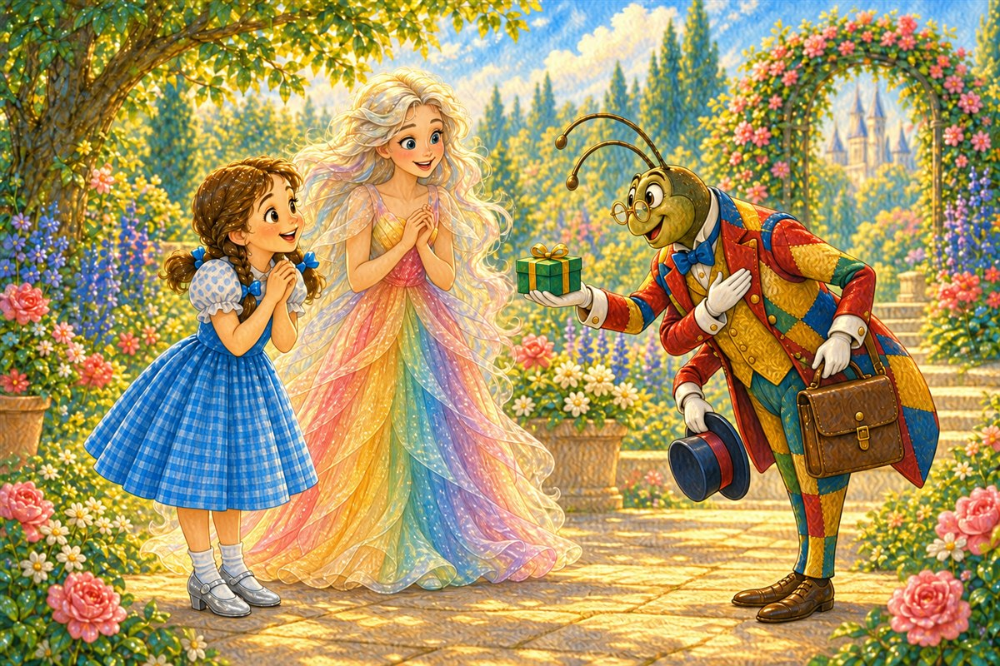
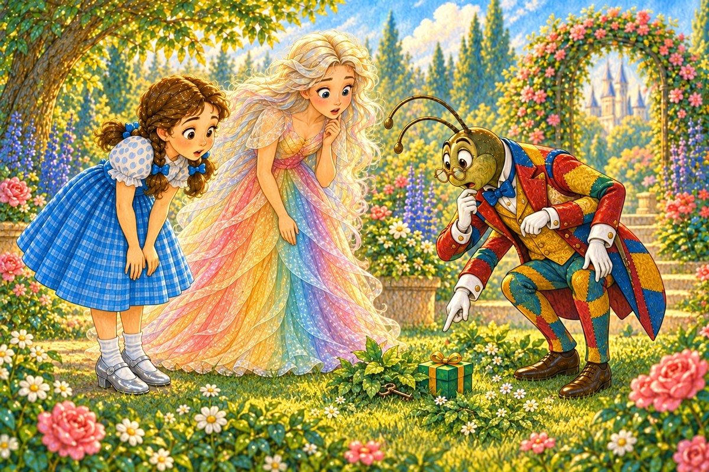
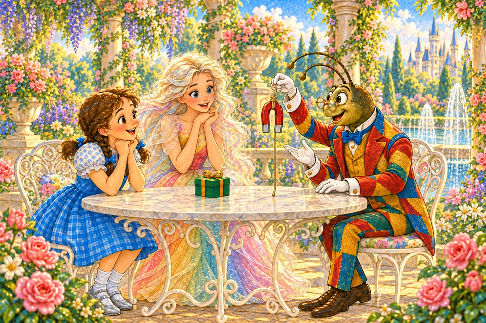
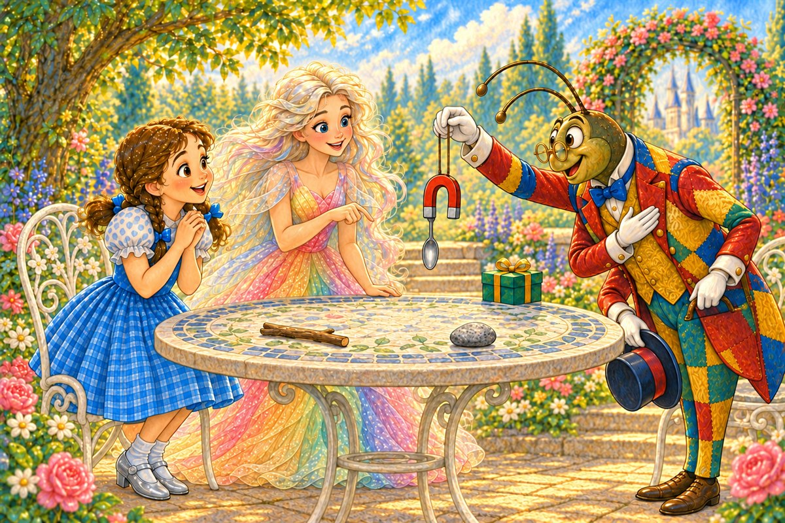
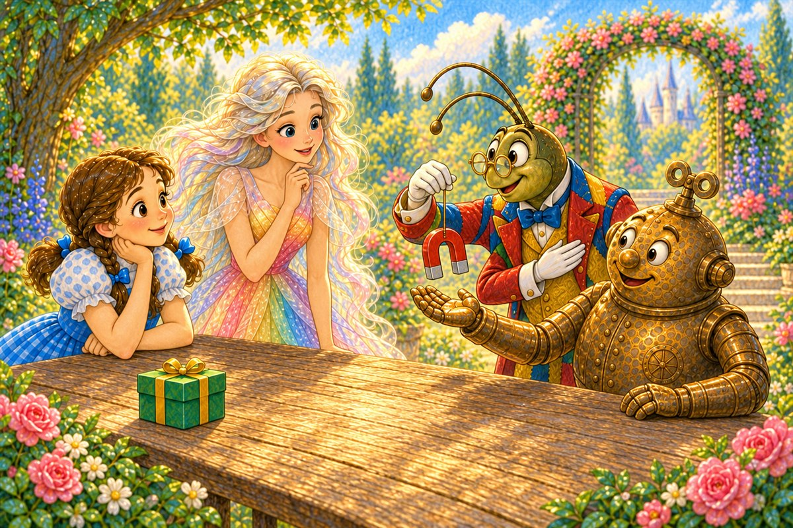
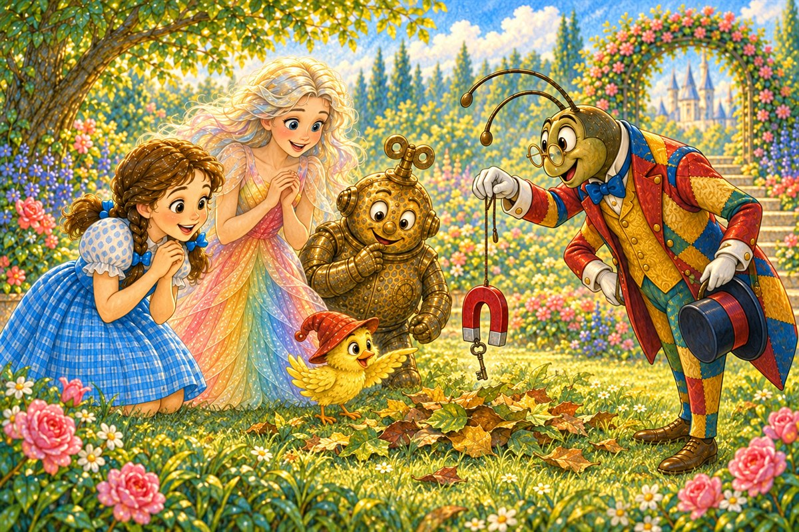
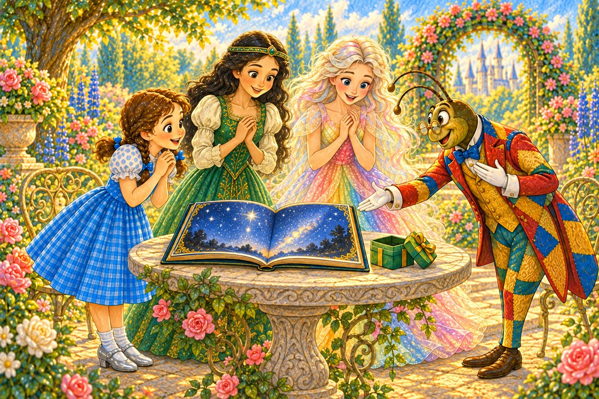

Pahina 1
Kinaumagahan, nanatili si Polychrome sa hardin.
Biglang dumating ang isang matangkad na insekto.
Makulay ang damit niya, at may apat siyang kamay.
Magalang siyang yumuko.
Isang bagong kuwento sa Lupain ng Oz
Basahin ang tatlong bagong pahina bawat araw. Bago magpatuloy, balikan muna ang mga pahinang nabasa na.

Kinaumagahan, nanatili si Polychrome sa hardin.
Biglang dumating ang isang matangkad na insekto.
Makulay ang damit niya, at may apat siyang kamay.
Magalang siyang yumuko.
“Ako si Propesor Wogglebug,” sabi niya.
“May regalo ako para kay Ozma.”
May maliit siyang berdeng kahon.

Nasa kamay ng propesor ang susing bakal.
Ngunit nahulog ito sa damo.
Nasa ilalim ito ng mga dahon.
Sama-sama silang naghanap sa buong hardin.
Naghanap si Dorothy sa ilalim ng mga dahon.
Tumingin si Polychrome sa tabi ng mga bato.
Munting susi ito. Hindi nila ito makita.

May batubalani ang propesor. May tali ito.
“Dumidikit dito ang bakal,” paliwanag niya.
“Ngunit hindi lahat ng metal ay dumidikit.”
“Subukan muna natin,” sabi ni Dorothy.
Inilapit niya ang batubalani sa isang sanga at isang bato.
Walang dumikit.

Naglagay si Polychrome ng bakal na kutsara sa mesa.
Inilapit ng propesor ang batubalani.
Biglang kumapit ang kutsara.

Iniunat ni Tik-Tok ang kamay niya. Tanso ito.
Hindi dumikit dito ang batubalani.
“Tanso ako, hindi bakal,” sabi niya.
Dahan-dahan nilang dinala ang batubalani sa ibabaw ng damo.
Dumaan ito sa ibabaw ng mga bato at sanga.
Wala pa ring kumapit.

Nang dumaan ito sa ibabaw ng maraming dahon, biglang huminto ang batubalani.
May munting bagay na kumapit dito.
“Ang susi!” sabi ng ibon.
Hinila ng propesor ang batubalani.
Kasama nito ang susing bakal.
Kinuha niya ang susi at binuksan ang berdeng kahon.

Nasa loob ang isang libro tungkol sa mga bituin.
Ibinigay iyon ng propesor kay Ozma.
“May susubukan pa ba bukas?” tanong ni Polychrome.
“Marami!” sagot ng propesor.
Pag-usapan natin